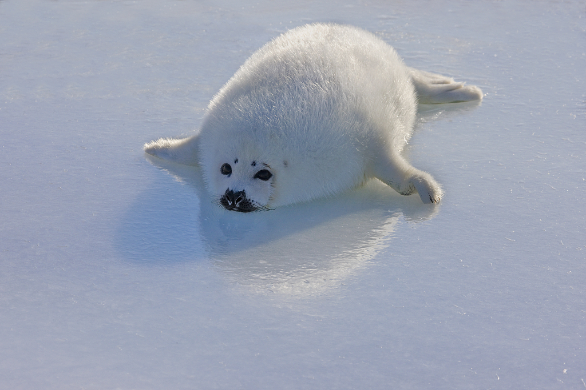

The Icy Plight of Baby Seals
In the sprawling, frosty expanses of our planet's polar regions, a silent crisis unfolds. Baby seals,
the undeniably endearing inhabitants of these icy realms, are facing unprecedented challenges to
their survival. From the rapidly melting ice caps due to global warming, to the lurking threats of
predators and human interference, their once serene nurseries are now arenas of uncertainty.
While these pups possess an intrinsic resilience and adaptability, the escalating threats of the 21st century are proving to be a colossal adversary. The fabric of their existence, which was once as solid as the ice they played upon, is now thinning at an alarming pace.
But here's the silver lining: knowledge is the first step to change. By understanding the magnitude and nuances of this crisis, you can become an ambassador for their cause.
Dive deeper into their world. Discover the causes, the consequences, and most importantly, the actions you can take. Join us in making a difference and ensuring that the enchanting chirps of baby seals continue to resonate across our planet's icy frontiers.